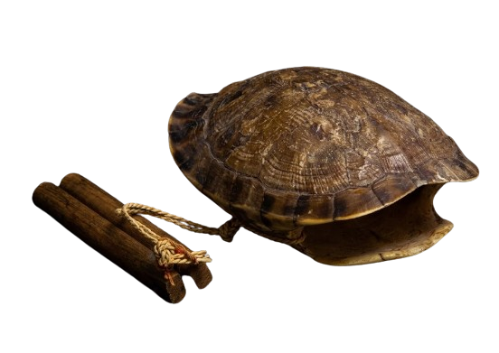

Lo que aprendiste en este recorrido
Durante este recorrido conociste tres instrumentos tradicionales de Tabasco: la flauta de carrizo, el tambor y el caparazón de tortuga. Aprendiste de dónde provienen, cómo se relacionan con la música tradicional tabasqueña y por qué forman parte importante de la identidad cultural del estado.
Materiales didácticos complementarios
Explora estos recursos para reforzar lo aprendido de forma visual y sonora.

Flauta de Carrizo
Instrumento de viento fundamental en la música tradicional, caracterizado por su manufactura artesanal y su sonido agudo que guía las melodías de las danzas.

Tambor Tradicional
Base rítmica de nuestra identidad musical. Su sonido profundo se logra mediante el golpeo con baquetas de madera y el tensado tradicional de la piel.

Caparazón de Tortuga
Instrumento de percusión único que produce distintas tonalidades según el área donde se golpee con el asta de venado, aportando un matiz acústico ancestral.
Demostración
© Grupo de Tamborileros de Tabasco